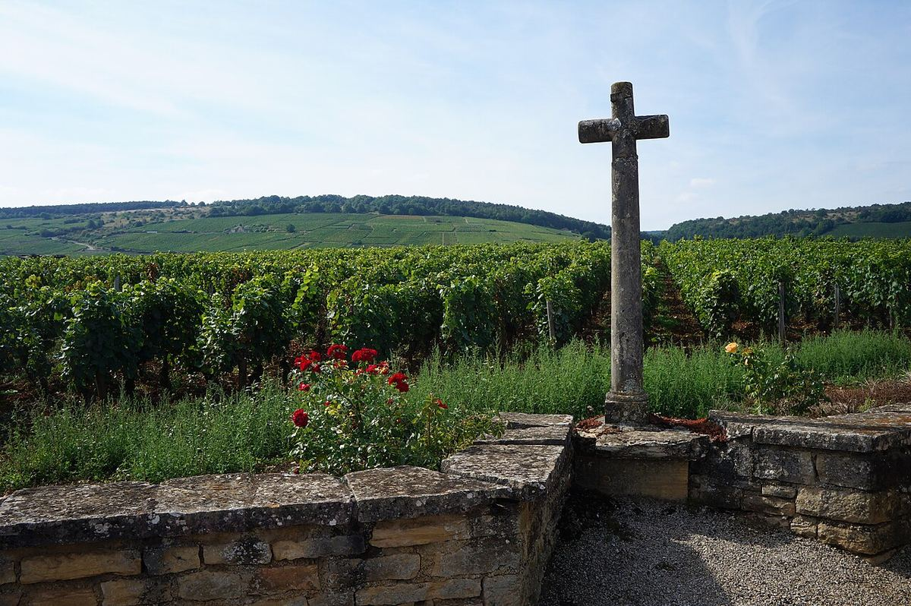

ROSSO
La Côte de Nuits è la metà settentrionale della Côte d'Or, tra Digione e Corgoloin. Dedicata quasi interamente al Pinot Nero, concentra la grande maggioranza dei grands crus rossi della Borgogna.

La Côte de Nuits è una stretta fascia di vigneti, spesso larga solo poche centinaia di metri, che segue la faglia che separa l'altopiano calcareo dalla pianura della Saona. Prende il nome da Nuits-Saint-Georges, il suo principale centro vinicolo, e si estende da Marsannay, alle porte di Digione, fino a Corgoloin. Le viti occupano pendii esposti a est e a sud-est, tra circa 250 e 350 metri di altitudine; i grands crus si trovano in genere a metà pendio, dove i suoli sono meglio drenati ed equilibrati.
L'influenza monastica fu decisiva. I cistercensi di Cîteaux costituirono il Clos de Vougeot e lo cinsero con un muro; il suo castello ospita oggi la confraternita dei Chevaliers du Tastevin, fondata nel 1934. L'abbazia di Bèze diede il nome al Clos de Bèze, a Gevrey. Nell'Ottocento diversi comuni aggiunsero al proprio nome quello del loro vigneto più celebre, come Gevrey-Chambertin, Chambolle-Musigny o Vosne-Romanée, un'usanza ripresa anche altrove in Borgogna.
Il clima è semicontinentale, con rischio di gelate e grandine. I suoli uniscono calcari e marne del Giurassico medio in proporzioni che cambiano da una parcella all'altra; i calcari più duri e i suoli sassosi della parte alta contrastano con i terreni più profondi e argillosi ai piedi del pendio, dove si trovano le denominazioni regionali.
Da nord a sud, i comuni principali sono Marsannay, l'unica denominazione comunale della Côte d'Or che ammette il rosato; Fixin; Gevrey-Chambertin, con nove grands crus, tra cui Chambertin e Chambertin-Clos de Bèze; Morey-Saint-Denis, con Clos de la Roche, Clos Saint-Denis, Clos des Lambrays, Clos de Tart e parte di Bonnes-Mares; Chambolle-Musigny, con Musigny e la maggior parte di Bonnes-Mares; Vougeot; Vosne-Romanée, con Romanée-Conti, La Tâche, La Romanée, Richebourg, Romanée-Saint-Vivant e La Grande Rue, oltre a Échézeaux e Grands-Échézeaux nel vicino comune di Flagey-Échézeaux; e Nuits-Saint-Georges, che non ha grands crus ma conta numerosi premiers crus. I comuni più meridionali condividono la denominazione Côte de Nuits-Villages e le colline retrostanti formano le Hautes-Côtes de Nuits.
Il Pinot Nero domina in modo quasi assoluto e dà rossi di grande finezza aromatica che, a seconda del comune, possono essere più strutturati, come a Gevrey-Chambertin, o più delicati, come a Chambolle-Musigny. Si producono piccole quantità di bianchi da Chardonnay, come il Musigny blanc, uno dei pochi grands crus bianchi della Côte de Nuits.